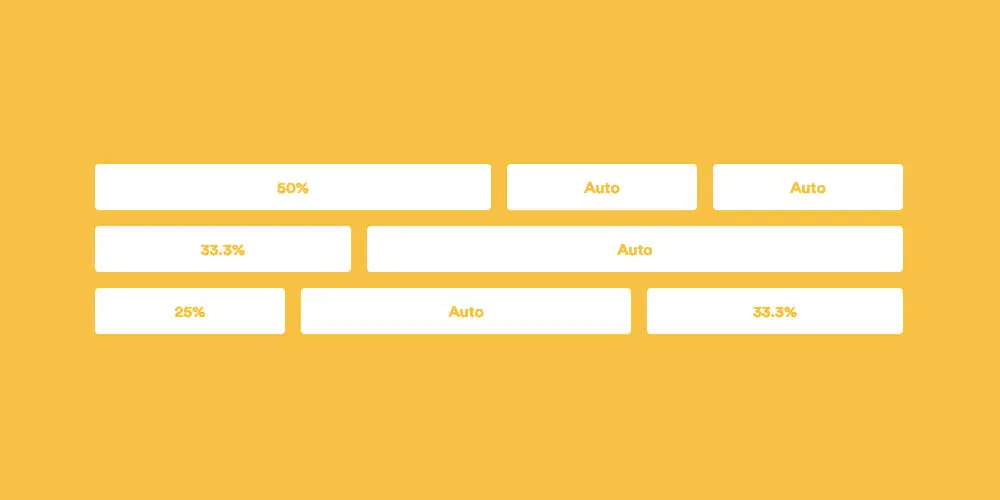

CONTAINER AND FLEXBOX
-

Flex-box
Flexbox — container’ni joylashtirishda muhim vosita hisoblanib, uning yordamida bir nechta qulayliklarga ega bo’lishimiz mumkin
-

Container
CSS konteynerlari bir xil shrift rangi, fon rangi, shrift o'lchami, shrift oilasi va boshqa xususiyatlarga ega bo'lgan tarkibni guruhlash uchun ishlatiladi.
-

space-evenly
space-evenly -- barcha asosiy elementlarni teng ravishda bo'sh joylashtiradi barcha bo'sh joy har bir yordamchi element atrofida chap va o'ng bo'shliqlarga teng ravishda bo'linadi.
-

space-between
space-between birinchi elementni butunlay chapga va oxirgi elementni to'liq o'ngga qo'yadi, qolgan har qanday bo'sh joy qolgan bolalar o'rtasida teng taqsimlanadi.
-

align-items
space-between birinchi elementni butunlay chapga va oxirgi elementni to'liq o'ngga qo'yadi, qolgan har qanday bo'sh joy qolgan bolalar o'rtasida teng taqsimlanadi.
-

flex-box
Flexbox — container’ni joylashtirishda muhim vosita hisoblanib, uning yordamida bir nechta qulayliklarga ega bo’lishimiz mumkin